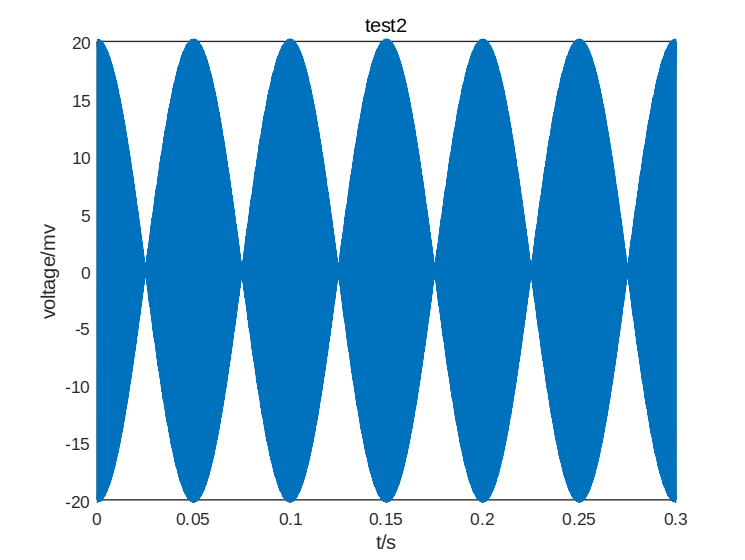

前言
昨天早上，历时半年多的大一立项终于完成了最后的答辩。
“四害驱赶家用机器人声武器系统的研制”，这是去年年底我们的导师给毫无想法的我们选定的课题。在仓促的几天中完成立项并且答辩成功后，我们就在这个坑中渐行渐远。从一开始的一脸懵逼，充满怀疑，到最后的彻底绝望，自暴自弃，我们理所当然地并没有做出什么成果。
虽然这个项目做得一塌糊涂，而且无甚成果，但是……嗯，但是，好歹完成了答辩。心想着深压硬盘底也没什么用，倒不如发布到博客上，也算是给他人排排雷。
课题背景
自古以来，四害问题一直困扰着人类。
传统的驱逐和消灭方法效率低。经过网上国内外的查询，发现并没有较为有效的驱逐四害的方法，大多数是以人为驱逐的方式，但效率不高；也有药物驱逐，但对人体的身体健康有着危害。
我们小组决定使用人耳听觉频段范围外的声波驱逐四害，原因主要有：
- 由于声波本身是无形的，所以并不会像化学药剂一样污染环境。
- 将声波调到合理的强度，对人的危害远小于化学药剂所造成的危害。
- 不会对人的日常生活工作造成影响。
综上所述，我组决定制作出一种小型的，能够发出可以让四害感到不适却又在人耳听觉频段范围外的声波驱逐四害，且具有指向性的声武器装置，并将其装在可自动导航的小车之上，使其可以边运动边发出次声以驱逐四害。
开始探索
通过查阅资料以及导师的指导，我组在经过多次讨论之后，确定了两个不同的声武器驱逐四害的方案。
两个方案分别是次声波驱逐方案和高功率超声波驱逐方案。以下是两个方案的详细介绍。
次声波驱逐方案
研究
根据了解，次声波频率与生物体自身的振荡频率相似，容易发生共振，产生极大能量，使四害感到不适，达到驱逐的效果。
因此，可以搭建一个可控次声装置，使其朝设定方向发射强次声波，达到驱除四害的目的。
在研究如何产生次声波方面，我组通过大量的资料查询以及数学公式推断，发现两束频率相近的声波可以在空气中线性叠加产生频率为差频的次声波。
公式推导如下：
假设两列振幅相同的，频率不同的次声波：
$φ1(t,x)＝Asin(ω1t＋k1x)φ2(t,x)＝Asin(ω2t＋k2x)$
相加并通过一系列三角变换可得：
$φ(t,x)＝2Acos(ωt＋kx)cos(ω′t＋k′x)$
$ω＝(ω1＋ω2)╱2ω′＝(ω1－ω2)╱2k＝(k1＋k2)╱2k′＝(k1－k2)╱2$
由此可得叠加后产生了一个振动频率为和频，振幅变化频率为差频的波形。
以下是在MATLAB仿真出来的两组结果：

仿真的结果验证了我们的猜测，两束频率相近的声波的确可以在空气中线性叠加产生频率为差频的次声波。根据这个性质，我们可以先产生两束高频波，然后通过一定的相位差，使其在空气中线性叠加产生次声波。
难题
在实施次声波方案的过程中，我组遇到了两个难以克服的困难：
- 难以产生两束频率相差小于20hz的超声波
我们产生次声波的方案是通过两束频率相近的超声波在空气中线性叠加后产生频率为差频的次声波。因此我们需要先产生两束频率相近的超声波。现有的产生超声波的方式为通过探头将正弦波或是方波转换为同频率的声波，然而这种方式非常依赖硬件，也就是探头。每一种探头的型号只能够加载相应频率的信号波，并发出同种频率的超声波。比如40khz的探头只能够加载40khz的信号波，发出40khz的超声波。
市面上探头的种类有很多，我们能够找到23khz、25khz、40khz等型号的探头，但是大多相差好几k频率，与之相比20hz的差频几乎可以忽略不记。因此在如今硬件水平上，我们难以寻找适合我们的，可以产生两束频率差小于20hz的探头。 - 市面上买不到合适且有效的次声波传感器
虽然我们的方案并不需要检测产生的次声波，但是在实验过程中检测次声波却是必不可少的。我们不仅需要通过检测次声波来验证我们是否成功产生我们所需要的次声波，还需要记录产生次声波的频率对于实验对象的影响程度。
检测次声波需要相应的硬件，也就是次声传感器。不同于检测非次声的传感器，市面上几乎没有合适的次声波传感器。虽有极少数的商品贩卖，但是不仅价格昂贵，而且多为接触式传感器，完全不符合我们的需求。而网络上虽有许多关于次声波传感器研发的论文与专利，但是大多需要特殊的材料或者不是非常靠谱的理论，以我们的能力很难去自己搭建合适的次声传感器。
因此次声波方案无法实现。
高功率超声波驱逐方案
研究
通过查阅资料，我组得知有特定频率的超声波会令害虫或者老鼠的听觉系统感到不适的声音（此已被证伪）。因此可以使用超声波来驱逐四害（基本上不行）。
根据我组的调查，市场上已有许多使用超声波驱逐四害的装置，像是超声波驱鼠器、超声波驱蚊器之类的，但是效果大多不够显著。我组认为是超声波的功率不够导致达到所需的目的。
已知超声波传播带来的能量与超声波的功率有关，如果能够将超声波的功率放大，发出的声场就可以具有高强度的能量，起到驱赶四害的效果。
所以如何产生高功率的超声波就成为了我组的研究内容。
在这方面，我组的想法是通过放大器模块放大由单片机和dds模块产生的正弦信号波，再加载到相应频率的探头上。
为此，我组制定了以下初步方案：
- 首先通过程序使单片机发出频率控制字，分别输入到dds模块中。
- 由dds模块产生高频率的正弦波信号。
- 使用放大器模块将产生的正弦波信号放大功率，然后加载到相应频率的超声探头上。
大致结构如下图所示：
我们采用的放大器模块为LM386，但是事实上，市面上的放大器模块的放大功率的效果并不是特别好，在限定工作电压范围内，大多无法满足放大到我们需求的倍数，所以我们需要寻找另一种放大超声波功率的方案。
受到我们的师兄正在研究基于相控阵的超声悬浮的启发，我组认为通过使用多个探头组成相控阵，发出相同频率的超声波，并且调整激励信号与声源的几何位置，使其满足一定的关系，可以将产生的超声波能够在某一固定点处相叠加，产生高强度的声波能量，从而达到放大功率的效果。
根据师兄提供的论文，该相列阵的电路结构大致如图所示：
用FPGA电路板作为控制模块，将信号传递给驱动板。然后由驱动板驱动相应的排成阵列的探头，产生相应频率的超声波。超声波将在空气中某一点聚焦，成为高功率的声波。
但是由于我组能力上的不足，尽管理论与方案都已给出，未能完成超声相控阵列，只能完成使用放大器模块放大超声波的方案。
实验结果
以下是我们通过示波器检测到波功率的结果。
| 放大器外接电压/V | 波频率/HZ | 正弦波信号/接收到的超声波 | 峰值/V |
|---|---|---|---|
| 5 | 23k | 接收到的超声波 | 15.4 |
| 5 | 40k | 接受到的超声波 | 46.4 |
| 5 | 40k | 正弦波信号 | 10.8 |
| 11 | 23k | 正弦波信号 | 25.6 |
| 11 | 40k | 正弦波信号 | 44 |
| 11 | 40 | 接收到的超声波 | 102 |
虽然我们利用放大器成功放大了产生的超声波，但是放大的倍数仅为原先的两倍，效果不是非常的好。
而且由于各种现实条件以及自身经验缺乏的原因，我组未能定制最后检验效果的实验方案，没有进行最终的检测。
首先是实验动物的缺失，学校里没有动物中心这类地方，我组也未能联系到提供实验动物的机构。如果自己捕获四害的话，没有合适的处理方式，会导致实验的正确性不高。再有我组并没有动物实验的经验，对于实验的步骤与实验结果的分析都毫无头绪。
综上所述，我们的方案并没能经过实验的验证。
结束语
如果你看完了这篇博文，你自然可以明白我们的项目是多么的水，多么的不切实际。不仅硬件上碰到困难，理论上无法证实，动物实验不会做，本身能学到的东西也是少的可怜。
我们最初的方案就只有次声波，超声波的方案是次声波方案确认无法继续之后才临时决定的，虽然这个方案从原理上就是错误的。
声波驱蚊？一直在坑爹，从未生过效
做到最后，我们只剩下拿到这门课的学分这一目的。用尽全力充实自己的报告和ppt，将自己的项目包装成很丰富，很充实的样子。但无论再怎么充实，终究也只是伪物，看到别组诸如体感小车，寻物机器人之类的牛逼项目，还是忍不住叹气，感觉自己浪费了大一立项的大好机会。
说到底应该算是最初项目选择上的锅。本来就没有什么经验的大一学生，应该选择在已有的成熟的产品基础上进行二次开发，而不是愣头青一般往不怎么可靠的方向乱窜。虽然我们也是往小车上安装声武器，但是声武器本身就没有成熟的理论支持，而且极其依赖硬件设施。而这些都成为了阻挡我们的高墙，逐渐消磨我们的热情，也慢慢浪费着我们的时间，因为我们基本上没能从中获得的我们所需要的东西和热情。
相比于这个不适合我们的项目，我觉得我实习期间所做的机械臂项目都要有用高级的多。而有时我脑海中也会蹦出几个容易做且有趣的项目，像是自主移动的风扇机器人之类的，只可惜立项之时脑袋中空空如也。
事到如今，大一项目也已经结束，该水的也水完了，除了叹气并总结一下经验也没有什么可以改变的。听说大二还有大创，希望这次我能够做出个好东西来。